source("https://raw.githubusercontent.com/markdunning/markdunning.github.com/refs/heads/master/files/training/bulk_rnaseq/install_bioc_packages.R")Introduction to RNA-Seq - Part 3
Further exploration of differential expression, followed by identification of biological pathways of interest
Quick Start
This section follows on from Part 1 and Part 2 where we saw how to import raw RNA-seq counts into DESeq2, perform some quality assessment and then differential expression. Several packages are required, which can be downloaded with this code:-
The following will also assume you have created a DESeq2 object in a folder called Robjects in your working directory. This can be downloaded with the following.
dir.create("Robjects/",showWarnings = FALSE)
download.file("https://github.com/markdunning/markdunning.github.com/raw/refs/heads/master/files/training/bulk_rnaseq/dds.rds",destfile = "Robjects/dds.rds")Differential expression with DESeq2
In Part 2 we dissected the DESeq workflow for differential expression in some detail. We also created a data frame for “annotating” the results with biological identifiers that are more recognisable.
library(org.Hs.eg.db)
anno <- AnnotationDbi::select(org.Hs.eg.db,keys=rownames(dds),
columns=c("SYMBOL","GENENAME", "ENTREZID"),
keytype="ENSEMBL")
# Have a look at the annotation
head(anno) ENSEMBL SYMBOL
1 ENSG00000000003 TSPAN6
2 ENSG00000000005 TNMD
3 ENSG00000000419 DPM1
4 ENSG00000000457 SCYL3
5 ENSG00000000460 FIRRM
6 ENSG00000000938 FGR
GENENAME ENTREZID
1 tetraspanin 6 7105
2 tenomodulin 64102
3 dolichyl-phosphate mannosyltransferase subunit 1, catalytic 8813
4 SCY1 like pseudokinase 3 57147
5 FIGNL1 interacting regulator of recombination and mitosis 55732
6 FGR proto-oncogene, Src family tyrosine kinase 2268The code to perform differential expression and incorporate the annotations is given below.
library(DESeq2)
library(dplyr)
library(ggplot2)
de_condition <- DESeq(dds)
results_annotated <- results(de_condition,
contrast = c("condition", "TGF", "CTR"),
tidy = TRUE) %>%
left_join(anno, by = c("row" = "ENSEMBL")) %>%
filter(!duplicated(row)) %>%
arrange(padj) %>%
## removing the lfcSE column
dplyr::select(-lfcSE)
results_annotated %>%
slice_head(n = 10) row baseMean log2FoldChange stat pvalue
1 ENSG00000119681 6471.7058 2.372065 33.52033 2.437260e-246
2 ENSG00000120708 22001.6982 1.436637 24.33084 9.248277e-131
3 ENSG00000172061 1481.6147 2.384971 24.22883 1.105455e-129
4 ENSG00000049540 932.0366 3.999465 22.78006 7.228861e-115
5 ENSG00000060718 1512.0092 2.123432 22.27506 6.448803e-110
6 ENSG00000115414 683348.5240 1.453310 21.16109 2.181368e-99
7 ENSG00000187498 30609.2525 1.458950 21.06196 1.776880e-98
8 ENSG00000186340 14380.2024 1.468632 20.98136 9.707600e-98
9 ENSG00000087245 51862.2917 1.282562 19.39194 9.026914e-84
10 ENSG00000139211 2302.3470 2.070441 18.99119 2.017183e-80
padj SYMBOL
1 4.371957e-242 LTBP2
2 8.294780e-127 TGFBI
3 6.609883e-126 LRRC15
4 3.241783e-111 ELN
5 2.313573e-106 COL11A1
6 6.521564e-96 FN1
7 4.553383e-95 COL4A1
8 2.176687e-94 THBS2
9 1.799164e-80 MMP2
10 3.618422e-77 AMIGO2
GENENAME ENTREZID
1 latent transforming growth factor beta binding protein 2 4053
2 transforming growth factor beta induced 7045
3 leucine rich repeat containing 15 131578
4 elastin 2006
5 collagen type XI alpha 1 chain 1301
6 fibronectin 1 2335
7 collagen type IV alpha 1 chain 1282
8 thrombospondin 2 7058
9 matrix metallopeptidase 2 4313
10 adhesion molecule with Ig like domain 2 347902Filtering the differential expression results
The results_annotated tibble contains results for all the genes that appeared in our counts data, which could be many 10,000s of potential candidates for being biologically meaningful. Deciding which genes to take forward for further investigation can be quite subtle, and can depend on what your question of interest is. With the simplest criteria applied (e.g. an adjusted p-value of 0.05) you can still be faced with 1000s of genes to interpret. Of course, there are methods for identifying biological themes (see later).
The padj and log2FoldChange in the results table are common quantities for filtering representing the statistical certainty and effect size respectively. In an ideal world, genes of interest should have a high degree of statistical certainty (extremely low p-value) and large effect size. As correcting for multiple testing is a standard procedure for large datasets, and is included in DESqe2as standard, we can be reasonably confident about the p-value adjustments that DESeq2 performed. We will discuss the log2FoldChange later.
At the moment we have almost 5,000 genes with an arbitrary 0.05 cutoff, but not all of them are going to be relevant to our question.
dplyr::count(results_annotated, padj <0.05) padj < 0.05 n
1 FALSE 13039
2 TRUE 4899
3 NA 39976But wait, we also have some NA values. What’s the deal with those? Maybe DESeq2 is doing something non-standard in p-value correction after all.
Why are some adjusted p-values “NA”?
It turns out that DESeq2 has already done some processing on the results to exclude genes with low expression level across the dataset that it deems to be unreliable and unlikely to be differential-expressed. The genes it filters out (those that have NA adjusted p-value) tend to have a lower value of baseMean.
results_annotated %>%
ggplot(aes(x = is.na(padj), y = baseMean)) + geom_boxplot() + scale_y_log10()
The core principle is that genes with very low expression (low average normalized counts) have little power to be called differentially expressed, even if their true \(\log_2\) fold change is comparatively large. By testing all genes, you incur a multiple testing penalty for these low-power genes, which reduces the number of genes that can be called significant overall.
The procedure first uses the mean of normalized counts (baseMean) across all samples as a filtering mechanism. Genes with very low expression have high \(p\)-values due to low statistical power (high variance relative to the mean), regardless of their true fold change. DESeq2 determines an optimal cutoff for the baseMean that maximizes the number of genes called significant (padj < \(\alpha\), where \(\alpha\) is usually \(0.1\) or \(0.05\)). This is done by testing a range of cutoffs and picking the one that yields the largest number of discoveries. Genes with mean counts below this optimal cutoff are removed (in practice their padj is set to NA). The remaining genes are then subjected to the Benjamini-Hochberg procedure. The benefit is a gain in statistical power. By reducing the total number of hypotheses tested, the multiple testing penalty is less severe, allowing more true positives (expressed genes with actual differential expression) to pass the adjusted \(p\)-value threshold.
The effect of filtering can be seen in the following histogram:-
mutate(results_annotated, Filtered = is.na(padj)) %>%
ggplot(aes(x = pvalue, fill = Filtered)) + geom_histogram(alpha = 0.4)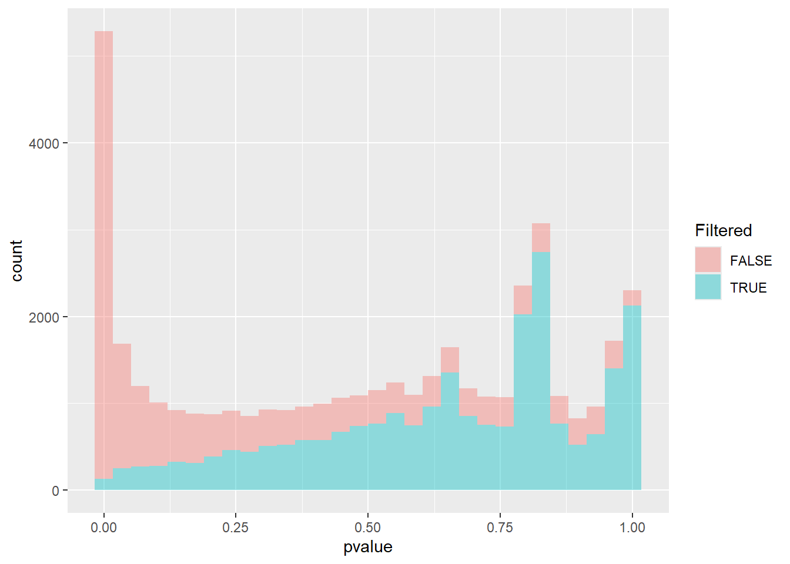
The filtered group (in blue) represents the low-count genes that were removed. The distribution is typically nearly uniform or even shows a slight peak towards the lower \(p\)-values. If these low-power genes were included, the overall flat null distribution needed for accurate FDR control would be slightly inflated near zero, leading to a harsher multiple testing penalty.
The non-Filtered Group (e.g., shown in red) represents the genes with sufficient expression to be tested. This is the set of \(p\)-values actually used for the Benjamini-Hochberg adjustment. This distribution should show a clear, desirable pattern: a strong peak near \(p=0\) (the true differentially expressed genes) and a flat, uniform distribution from \(\sim0.05\) to \(1\) (the true null hypotheses).
By removing the “Filtered” genes, the adjusted \(p\)-values (padj) are calculated only on the well-behaved “Non-Filtered” set, resulting in more significant calls for the well-expressed genes.
If the details above seem complex, remember that DESeq2 will do these automatically without you having to think about them. If we think this behaviour isn’t desirable, or are curious to see the results without any adjustment, we can set the argument independentFiltering = FALSE in the results function.
Shrinking the log fold-changes
DESeq2 provides an estimate, for each gene, of the difference in mean expression between our groups. However, in the same way that the raw pvalues can be improved by the adjustment described about, we can also get better estimates of the log fold-changes (LFC).
When we made the MA-plot in the previous section we saw a fanning effect at lower expression levels. A technique called “shrinkage” helps to address this as the “shrunken” log fold-change is a better measure of biological magnitude for ranking genes.
Log fold-change shrinkage, implemented in DESeq2 via the lfcShrink() function, uses a statistical technique called Bayesian shrinkage (or an Empirical Bayes approach) to address this.
It works by:
“Borrowing” Information: It assumes that most genes are not differentially expressed (i.e., most true LFCs are near zero).
“Shrinking”: For genes with low counts (low confidence in the LFC), it shrinks their estimated LFC closer to zero.
Leaving Alone: For genes with high counts (high confidence in the LFC), the shrinkage effect is minimal, leaving the raw LFC largely untouched.
To use lfcShrink we have to supply the initial run of the DESeq pipeline (saved as de_condition in our case) and pay careful attention to the number of the coefficient that we want to apply shrinkage to. Running the resultsNames function prints that names of the coefficients, so TGF_vs_CTR is numbered coefficient 3. Printing the results_final object allows us to check as name of the contrast is printed to the screen.
resultsNames(de_condition)[1] "Intercept" "condition_IR_vs_CTR" "condition_TGF_vs_CTR"results_final <- lfcShrink(de_condition, coef = 3)
results_finallog2 fold change (MAP): condition TGF vs CTR
Wald test p-value: condition TGF vs CTR
DataFrame with 57914 rows and 5 columns
baseMean log2FoldChange lfcSE pvalue padj
<numeric> <numeric> <numeric> <numeric> <numeric>
ENSG00000000003 1430.562846 -0.237256214 0.0803547 0.00164531 0.00906995
ENSG00000000005 0.113566 -0.000790077 0.2366069 0.98271709 NA
ENSG00000000419 1790.537536 -0.124931105 0.0952624 0.15063862 0.30807839
ENSG00000000457 640.692302 -0.272618872 0.1122208 0.00631933 0.02685529
ENSG00000000460 206.179026 0.115024336 0.1370301 0.30744046 0.50350287
... ... ... ... ... ...
ENSG00000284744 8.307038 -0.01672418 0.227751 0.793565 NA
ENSG00000284745 0.000000 NA NA NA NA
ENSG00000284746 0.101097 -0.00725327 0.236624 0.796900 NA
ENSG00000284747 28.783710 -0.06640128 0.219111 0.507490 0.689074
ENSG00000284748 0.548323 0.00647730 0.236572 0.830517 NALet’s remind ourselves of the MA- plot of the raw differential expression results
results_raw <- results(de_condition)
plotMA(results_raw)
Looking at the “shrunken” results
plotMA(results_final)
The shrinkage technique will only change the log\(_2\) fold-changes and not the adjusted or raw p-values. The purpose of shrinkage is to make the magnitude of the effect reliable for ranking genes, visualizing them in an MA plot, and filtering based on a minimum LFC threshold (e.g., Log2FoldChange > 1). We can create a finalised results table by joining the annotation as before.
results_final <- as.data.frame(results_final) %>%
tibble::rownames_to_column("ENSEMBL") %>%
left_join(anno) %>%
filter(!duplicated(ENSEMBL)) %>%
arrange(padj) Investigating particular gene sets
Extracellular Matrix (ECM) genes serve as the blueprint and building materials for the structural and biochemical changes that promote cancer progression. We might hypothesise that the expression of these genes would be altered after treatment with TGF
For the Extra-Cellular Matrix (ECM) pathway we can extract all genes as follows once we know the GO ID:-
## The pull function from dplyr is used to extract a particular column
library(org.Hs.eg.db)
pathway_genes <- AnnotationDbi::select(org.Hs.eg.db,
keys = "GO:0030198",
keytype = "GO",
columns="ENSEMBL") %>% pull(ENSEMBL)We will now make a few plots to explore whether the genes belonging to this pathway have a tendency to be differentially-expressed (DE). Starting with a volcano plot (made by-hand this time), we will label the points according to whether their ENSEMBL ID is one of the genes belonging to the pathway.
results_final %>%
mutate(ECM_Gene = ENSEMBL %in% pathway_genes) %>%
ggplot(aes(x = log2FoldChange, y = -log10(padj), col = ECM_Gene, alpha = ECM_Gene)) + geom_point() + scale_colour_manual(values = c("black", "red")) + scale_alpha_manual(values=c(0.1,1))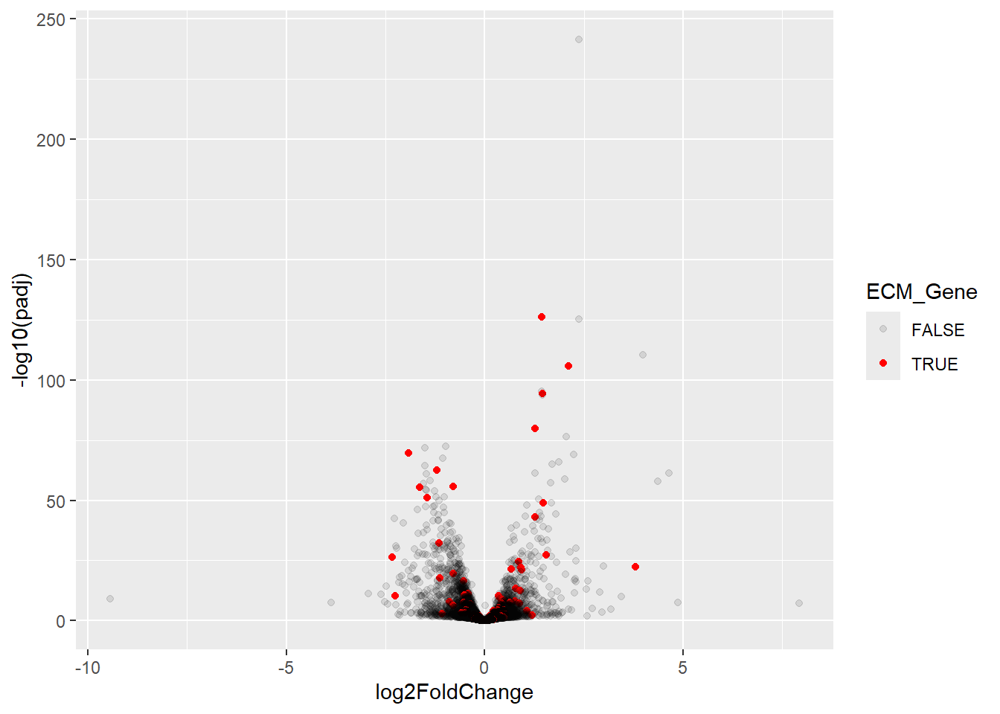
It certainly looks like some of these genes are DE. Another related plot is to look at the statistical significance (-log\(_{10}\) adjusted p-value) for ECM and other genes separately.
results_final %>%
mutate(ECM_Gene = ENSEMBL %in% pathway_genes) %>%
ggplot(aes(x = ECM_Gene, y = -log10(padj))) + geom_boxplot()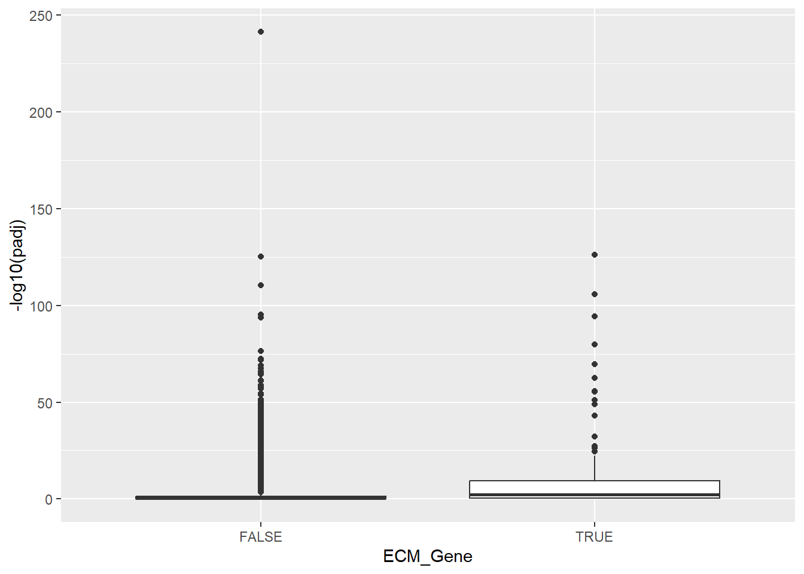
Again, the significance of ECM genes looks higher. Our next visualisation could be a heatmap, which if you recall from the previous section can be created using the pheatmap package. The variance stabilised data produced by vst is a good choice for this type of visualisation. We first make sure all the ENSEMBL IDs for the pathway are actually in our dataset, and get the VST values for these genes.
We then remove any rows with low variance, and look-up the gene symbols to be used to label the rows.
library(pheatmap)
vsd <- vst(dds)
## make sure all ENSEMBL IDs are in the dataaset
pathway_genes <- pathway_genes[pathway_genes %in% rownames(dds)]
## Get the VST values for these
heatmap_data <- assay(vsd)[pathway_genes,]
## Remove rows with low variance
heatmap_data <- heatmap_data[rowVars(heatmap_data) >0.005, ]
row_labs <- heatmap_data %>% data.frame() %>% tibble::rownames_to_column("ENSEMBL") %>%
left_join(results_final) %>%
pull(SYMBOL)
samp_anno <- data.frame(colData(dds)) %>% dplyr::select(condition, Treated)
pheatmap(heatmap_data,
annotation_col = samp_anno,scale="row",
labels_row = row_labs)
Again, this shows genes whose expression seems to be affected by TGF. All these plots are interesting observations, but not concrete scientific proof.
To start to ascribe some significance to the finding we start by defining how many ECM genes we have in our data:-
n_ECM_genes <- filter(results_final, ENSEMBL %in% pathway_genes) %>% nrow
n_ECM_genes[1] 158Next, how many genes are DE. Let’s use a loose definition of an adjusted p-value less than 0.05.
n_DE_genes <- filter(results_final, padj < 0.05) %>% nrow()
n_DE_genes[1] 4899Finally, how many of our ECM genes are also DE
n_ECM_DE_genes <- filter(results_final, padj < 0.05,ENSEMBL %in% pathway_genes) %>% nrow()
n_ECM_DE_genes[1] 69If our gene list was just a really random set of genes, with no relation to the underlying biology, then we would naturally expect some number of ECM genes to occur by chance alone. To get a handle on how many we might expect we can run a small simulation.
n_ECM_genes <- filter(results_final, ENSEMBL %in% pathway_genes) %>% nrow
n_DE_genes <- filter(results_final, padj < 0.05) %>% nrow()
ECM_rand <- NULL
for(i in 1:1000){
ECM_rand[i] <- results_final %>%
slice_sample(n = n_DE_genes) %>%
filter(ENSEMBL %in% pathway_genes) %>%
nrow()
}Exercise
Use the code above to simulate how many ECM genes we might reasonably expect in a random gene list with the same length as our list of DE genes. Make a histogram of the results and make sure you understand the code. Is the actual number of ECM genes that we found to be DE consistent with this distribution?
Solution
## Running the code
n_ECM_genes <- filter(results_final, ENSEMBL %in% pathway_genes) %>% nrow
n_DE_genes <- filter(results_final, padj < 0.05) %>% nrow()
ECM_rand <- NULL
for(i in 1:1000){
ECM_rand[i] <- results_final %>%
slice_sample(n = n_DE_genes) %>%
filter(ENSEMBL %in% pathway_genes) %>%
nrow()
}
data.frame(ECM_rand) %>%
ggplot(aes(x = ECM_rand)) + geom_histogram() + geom_vline(xintercept = n_ECM_DE_genes, col = "red") + geom_vline(xintercept = median(ECM_rand),col="blue")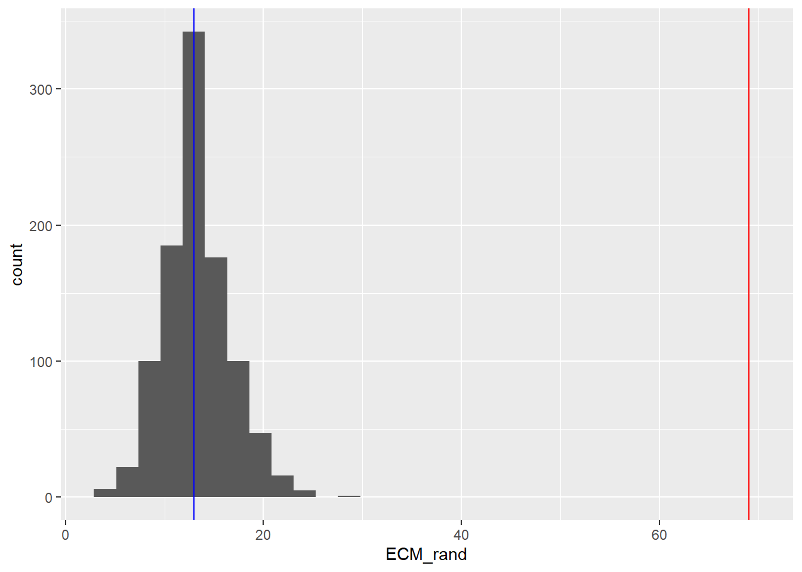
The number of ECM genes we observed was 69 whereas the histogram shows we would expect around 13. It certainly seems like there more ECM genes than we would expect by chance.
To formalise the test, we can then annotate each gene in our results according to whether it belongs to this pathway, and whether it is DE or not.
go_table <- mutate(results_final,
inPathway = ENSEMBL %in% pathway_genes,
isDE = padj < 0.05 )
go_table %>%
slice_head(n = 10) %>%
dplyr::select(SYMBOL, inPathway, isDE) SYMBOL inPathway isDE
1 LTBP2 FALSE TRUE
2 TGFBI TRUE TRUE
3 LRRC15 FALSE TRUE
4 ELN FALSE TRUE
5 COL11A1 TRUE TRUE
6 FN1 FALSE TRUE
7 COL4A1 TRUE TRUE
8 THBS2 FALSE TRUE
9 MMP2 TRUE TRUE
10 AMIGO2 FALSE TRUECross-tabulating the two new columns gives a basis for a statistical test
table(go_table$inPathway, go_table$isDE)
FALSE TRUE
FALSE 12994 4830
TRUE 45 69The Fisher’s exact test or chi-squared test (as seen here) can then be used
chisq.test(table(go_table$inPathway, go_table$isDE))
Pearson's Chi-squared test with Yates' continuity correction
data: table(go_table$inPathway, go_table$isDE)
X-squared = 62.088, df = 1, p-value = 3.284e-15We now have a p-value that is statistically-significant and can conclude that genes in the ECM pathway appear in our gene list more than we would expect by chance.
Pathways analysis
We have of course picked ECM because it fit with a hypothesis we had about the dataset. It may not be the most significant pathway of interest, and probably not the only one either.
In reality it would be impractical to test all possible pathways in this manner, so there are a number of Bioconductor packages that automate the process. There are two main methodologies with the key distinction being whether we are happy to draw an arbitrary cut-off on the adjusted p-value and possibly LFC (Threshold-based or Over-representation analysis) or not (Gene Set Enrichment Analysis (GSEA)). Although we will use a single package that allows both methods, there are many other packages and websites available. Fortunately they mostly tend to use the same input(s).
Threshold-based Gene Set Testing
Threshold-based or Over-representation analysis is used once we have decided a list of DE genes that we are happy with. The analysis then looks for gene sets that are over-represented, or occur more than we would expect by chance.
clusterProfiler is a Bioconductor package for pathways and downstream analysis and it’s main advantage is that it provides some nice visualisation methods.
The function for over-representation analysis on Gene Ontologies is enrichGO which requires the IDs of genes found to be DE (sigGenes) and the IDs of all genes in the dataset (universe). It uses the org.Hs.eg.db package to map between gene names and biological pathways.
Note
Unlike the DESeq workflow in the previous section, which reports all genes regardless of their significance, enrichGO only reports significant pathways based on the qvalueCutoff and pvalueCutoff arguments. If you want to see all the results regardless of significance you can set these values to 1.
The p.adjust and qvalue columns refers to two separate but related methods for multiple testing. p.adjust uses the the Benjamini-Hochberg (\(\text{BH}\)) method (also called \(\text{FDR}\) or \(\text{BH}\)), which is a common and robust method for controlling the \(\text{FDR}\). This is a step-up method that adjusts the raw \(P\)-value for each term. If you set a \(\text{BH}\) cutoff of \(0.05\), you are stating that you expect at most 5% of your rejected null hypotheses (your significant terms) to be false discoveries (i.e., enriched by chance). Therefore the value in the \(\text{p.adjust}\) column is the lowest \(\text{FDR}\) you can tolerate while still declaring that specific term significant.
The qvalue column comes from a method developed by John Storey, often implemented via the qvalue R package, which is frequently used for high-throughput data. The \(\text{Q}\)-value is an estimate of the minimum expected \(\text{FDR}\) incurred when declaring a specific term significant. Unlike the \(\text{BH}\) method, the \(\text{Q}\)-value method estimates the proportion of true null hypotheses (\(\pi_0\)) present in the data, leading to a potentially more powerful (less conservative) adjustment. If a term has a \(\text{Q}\)-value of \(0.01\), it means that if you choose that value as your significance cutoff, you expect 1% of the terms declared significant to be false positives. Consequently the value in the \(\text{qvalue}\) column is generally lower (more stringent) than the \(\text{p.adjust}\) value because it uses the estimated \(\pi_0\) to adjust the calculation.
library(clusterProfiler)
universe <- results_final %>% pull(ENSEMBL)
sigGenes <- results_final %>%
filter(padj < 0.05) %>% pull(ENSEMBL)
enrich_go <- enrichGO(
gene= sigGenes,
OrgDb = org.Hs.eg.db,
keyType = "ENSEMBL",
ont = "BP",
universe = universe,
qvalueCutoff = 0.05,
readable=TRUE
)The result of enrichGo can be turned into a data frame for easier interpretation.
enrich_go %>% data.frame %>%
slice_head(n = 10) %>%
select(-geneID) ID Description GeneRatio
GO:2001233 GO:2001233 regulation of apoptotic signaling pathway 164/4221
GO:0045229 GO:0045229 external encapsulating structure organization 145/4221
GO:0030198 GO:0030198 extracellular matrix organization 144/4221
GO:0043062 GO:0043062 extracellular structure organization 144/4221
GO:0036293 GO:0036293 response to decreased oxygen levels 140/4221
GO:0001666 GO:0001666 response to hypoxia 135/4221
GO:0070482 GO:0070482 response to oxygen levels 148/4221
GO:0006979 GO:0006979 response to oxidative stress 162/4221
GO:0001503 GO:0001503 ossification 176/4221
GO:0051338 GO:0051338 regulation of transferase activity 176/4221
BgRatio RichFactor FoldEnrichment zScore pvalue
GO:2001233 398/18429 0.4120603 1.799066 8.784050 1.565104e-16
GO:0045229 341/18429 0.4252199 1.856522 8.701630 3.876853e-16
GO:0030198 339/18429 0.4247788 1.854596 8.656085 5.449599e-16
GO:0043062 340/18429 0.4235294 1.849141 8.613749 7.346873e-16
GO:0036293 328/18429 0.4268293 1.863548 8.601070 8.622993e-16
GO:0001666 314/18429 0.4299363 1.877114 8.544404 1.403743e-15
GO:0070482 356/18429 0.4157303 1.815090 8.464390 1.955033e-15
GO:0006979 406/18429 0.3990148 1.742109 8.241337 7.442020e-15
GO:0001503 458/18429 0.3842795 1.677775 8.005937 3.121776e-14
GO:0051338 463/18429 0.3801296 1.659656 7.835427 9.807162e-14
p.adjust qvalue Count
GO:2001233 9.855460e-13 6.741479e-13 164
GO:0045229 1.085980e-12 7.428482e-13 145
GO:0030198 1.085980e-12 7.428482e-13 144
GO:0043062 1.085980e-12 7.428482e-13 144
GO:0036293 1.085980e-12 7.428482e-13 140
GO:0001666 1.473228e-12 1.007740e-12 135
GO:0070482 1.758692e-12 1.203007e-12 148
GO:0006979 5.857800e-12 4.006940e-12 162
GO:0001503 2.184203e-11 1.494071e-11 176
GO:0051338 6.175570e-11 4.224306e-11 176The output data frame is using the same approaches discussed above and the GeneRatio and BgRatio columns tell you for each row (pathway) how many genes in that pathway were found in the DE genes (GeneRatio), and in the background (BgRatio). The FoldEnrichment indicates how many more times each pathway is represented than you would expect. Somewhat reassuringly the ECM pathway is found among these most significant pathways. A dot plot can show us the most enriched pathways, their statistical significance, and the size of each.
enrichplot::dotplot(enrich_go,showCategory=20)
You might notice that the names of some pathways, and the numbers of genes they contain are extremely similar. For example extracellular matrix organization and extracellular structure organization. This is because Gene Ontologies are not mutually exclusive and can comprise the same genes. The results can therefore give a false impression of how many biological functions are being represented amongst the results. Overlaps between gene sets can also be visualised using an “Upset plot” - an alternative to a venn diagram. The connected dots in the bottom panel show genes that are shared between different pathways, and the number of these genes is displayed in the bar chart.
enrichplot::upsetplot(enrich_go)
The emapplot function is another way of identifying redundancy and clustering the enrichment results into broader biological themes. For instance, terms like “cell proliferation,” “cell division,” and “mitotic nuclear division” would all cluster together, indicating they represent the single, large theme of “cell cycle.”
Each node in this plot represents a significantly enriched pathway or GO term. Whereas an edge (line) connects two nodes if their underlying gene sets overlap significantly (i.e., they share many common genes).
enrich_go <- enrichplot::pairwise_termsim(enrich_go)
emapplot(enrich_go)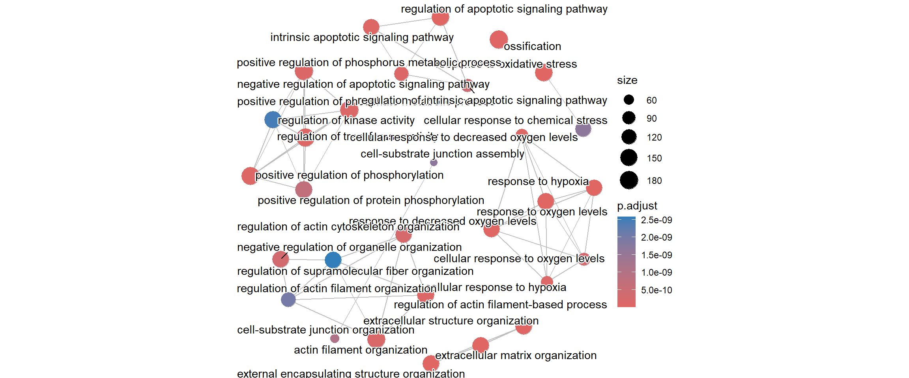
A gene-concept network plot (cnetplot) depicts the linkages of genes and biological concepts (e.g. GO terms or KEGG pathways) as a network. This plot can identify the core “hub” genes (genes with high connectivity) that are common to multiple enriched pathways. These hub genes are often considered the most critical players driving the observed biological change.
cnetplot(enrich_go)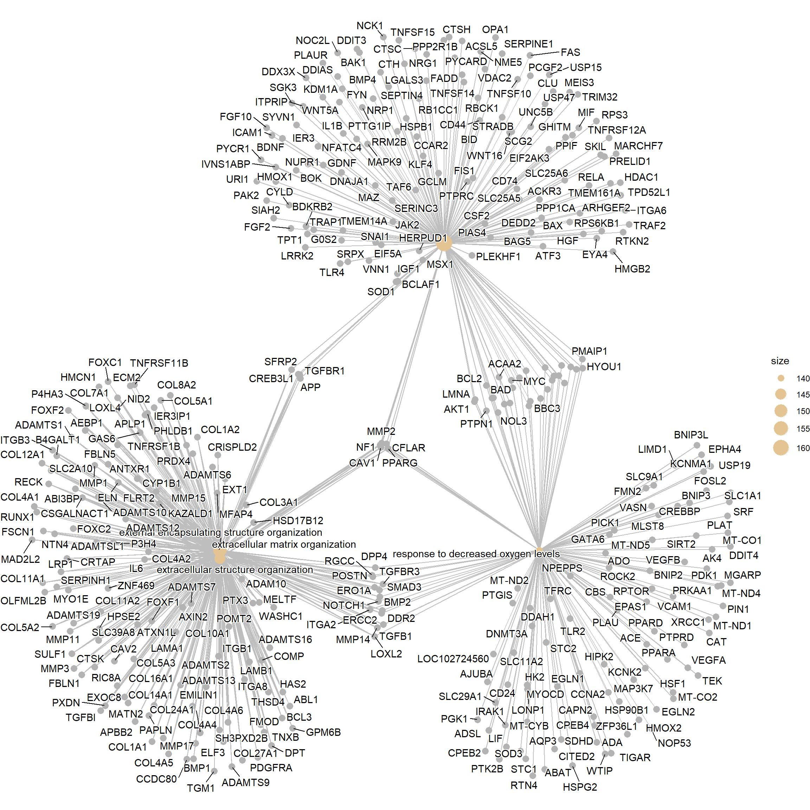
Theheatplot is another way of visualising pathway overlaps. In this plot, each column is a gene and a black box indicating if that gene features in a given pathway.
heatplot(enrich_go, showCategory = 10)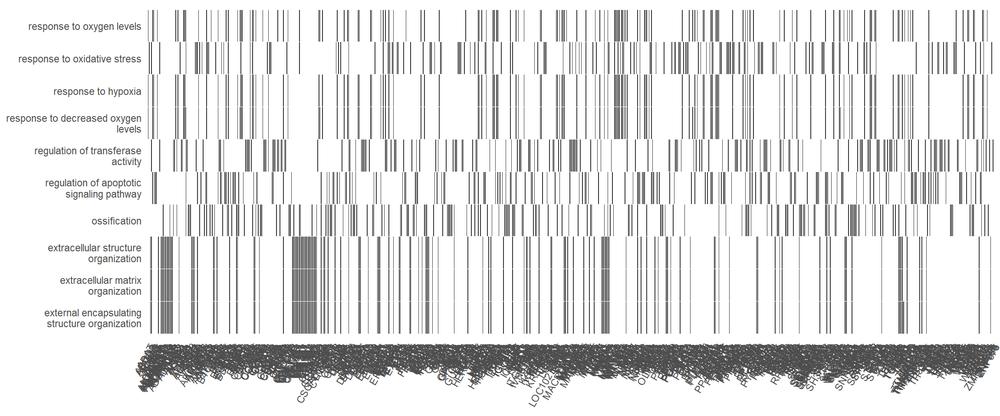
Finally, the treeplot function performs hierarchical clustering of enriched terms. It relies on the pairwise similarities of the enriched terms calculated by the pairwise_termsim() function, which by default usese the Jaccard’s similarity index (JC).
enrich_go <- enrichplot::pairwise_termsim(enrich_go)
enrichplot::treeplot(enrich_go)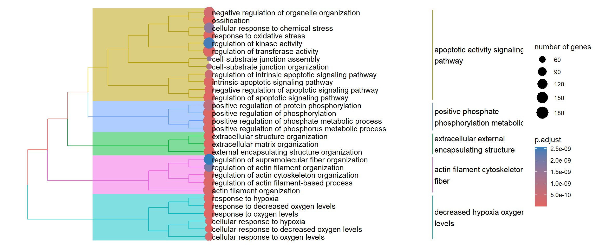
“Simplifying” the GO results
As noted, GO terms contain a lot of redundancy due to its hierarchical nature. We can however tackle this issue using the simplify function. In order to understand the impact we will first make a note of how many pathways are in the un-simplified output.
enrich_go %>% data.frame() %>% nrow[1] 1486“Similarity” in this case refers to semantic similarity as implemented in the GOSemSim package. Semantic similarity, in the context of Gene Ontology (GO),cis a quantitative measure of how functionally related two GO terms are. It goes beyond simple gene sharing by assessing the terms’ proximity within the GO hierarchy (the Directed Acyclic Graph or DAG). Two terms are highly similar if they share a common ancestor deep in the hierarchy, indicating a functional relationship, regardless of whether their gene lists overlap perfectly. This method ensures that terms covering the same core biological concept are grouped together.
If two or more GO terms are found to be highly similar (i.e., their similarity score meets or exceeds the defined cutoff), simplify() considers them redundant and removes one of them by for example picking the term with the most significant p-value.
## This may take a while to run
enrich_go_simplified <- simplify(enrich_go)
enrich_go_simplified %>% data.frame %>% slice_head(n = 10) ID Description GeneRatio
GO:2001233 GO:2001233 regulation of apoptotic signaling pathway 164/4221
GO:0030198 GO:0030198 extracellular matrix organization 144/4221
GO:0036293 GO:0036293 response to decreased oxygen levels 140/4221
GO:0006979 GO:0006979 response to oxidative stress 162/4221
GO:0001503 GO:0001503 ossification 176/4221
GO:0051338 GO:0051338 regulation of transferase activity 176/4221
GO:0042327 GO:0042327 positive regulation of phosphorylation 168/4221
GO:0036294 GO:0036294 cellular response to decreased oxygen levels 80/4221
GO:0097193 GO:0097193 intrinsic apoptotic signaling pathway 135/4221
GO:0032970 GO:0032970 regulation of actin filament-based process 153/4221
BgRatio RichFactor FoldEnrichment zScore pvalue
GO:2001233 398/18429 0.4120603 1.799066 8.784050 1.565104e-16
GO:0030198 339/18429 0.4247788 1.854596 8.656085 5.449599e-16
GO:0036293 328/18429 0.4268293 1.863548 8.601070 8.622993e-16
GO:0006979 406/18429 0.3990148 1.742109 8.241337 7.442020e-15
GO:0001503 458/18429 0.3842795 1.677775 8.005937 3.121776e-14
GO:0051338 463/18429 0.3801296 1.659656 7.835427 9.807162e-14
GO:0042327 437/18429 0.3844394 1.678473 7.823726 1.157220e-13
GO:0036294 162/18429 0.4938272 2.156063 8.055372 1.312428e-13
GO:0097193 330/18429 0.4090909 1.786102 7.853963 1.461138e-13
GO:0032970 390/18429 0.3923077 1.712826 7.755145 2.169650e-13
p.adjust qvalue
GO:2001233 9.855460e-13 6.741479e-13
GO:0030198 1.085980e-12 7.428482e-13
GO:0036293 1.085980e-12 7.428482e-13
GO:0006979 5.857800e-12 4.006940e-12
GO:0001503 2.184203e-11 1.494071e-11
GO:0051338 6.175570e-11 4.224306e-11
GO:0042327 6.624558e-11 4.531430e-11
GO:0036294 6.886965e-11 4.710925e-11
GO:0097193 7.077530e-11 4.841278e-11
GO:0032970 9.758775e-11 6.675344e-11
geneID
GO:2001233 MMP2/CTSC/PTGS2/HGF/INHBA/EYA4/BDKRB2/NRG1/SFRP1/CLU/UNC5B/PPARG/NR4A2/CD44/TLR4/LGALS3/MAZ/PPP2R1B/ITGA6/NUPR1/PMAIP1/BMP4/LRRK2/FGF10/IL1B/DDIT3/TNFRSF12A/SERINC3/CAV1/TMBIM6/BDNF/BOK/CFLAR/IER3/TNFSF15/ATF4/CSF2/IGF1/DDX3X/FAS/SKIL/PML/ACSL5/G0S2/BBC3/KLF4/SGK3/IL1A/ICAM1/ARHGEF2/PYCR1/FGF2/NCK1/WNT16/RRM2B/CREB3L1/IVNS1ABP/NFE2L2/STRADB/ATF3/TNFSF10/HSPB1/FYN/GDNF/TRIM32/BAK1/CYLD/PTTG1IP/ACAA2/HERPUD1/SIAH2/VNN1/NOC2L/TMEM161A/VDAC2/DNAJA1/TP53/PIAS4/THBS1/TNFSF14/TAF6/HMOX1/BID/EIF2AK3/WNT5A/CTH/PTPRC/PCGF2/RBCK1/MARCHF7/HYOU1/CCAR2/RPS6KB1/MEIS3/RB1CC1/PLAUR/GCLM/SRPX/HIF1A/PAK2/MDM2/SERPINE1/TPT1/PTPN1/FADD/BCL2/URI1/TMEM14A/PPIF/USP15/TPD52L1/MYC/GHITM/EIF5A/ACKR3/TRAP1/USP47/ITPRIP/CXCL12/SYVN1/RELA/CTSH/BAX/ENO1/HMGB2/APP/PIK3CB/RPS3/NME5/SLC25A5/DDIAS/PYCARD/PPP1CA/NFATC4/KDM1A/TRAF2/BAD/TGFBR1/SLC25A6/MIF/NF1/MAPK9/MSX1/DEDD2/AKT1/BAG5/NOL3/PLEKHF1/SEPTIN4/FIS1/CD74/SOD1/SRC/SFRP2/NRP1/BCLAF1/PRELID1/RTKN2/JAK2/SCG2/LMNA/HDAC1/SNAI1/OPA1
GO:0030198 TGFBI/ELN/COL11A1/COL4A1/MMP2/ITGA8/TNFRSF11B/TGFBR3/COMP/RECK/CSGALNACT1/ADAMTS1/COL8A2/COL5A1/DPP4/COL1A1/COL4A2/SULF1/FBLN5/SMAD3/COL14A1/NID2/HMCN1/MMP11/GPM6B/MFAP4/COL4A6/LAMB1/SERPINH1/MMP1/FLRT2/NTN4/POSTN/COL16A1/PPARG/MMP14/ABI3BP/SLC39A8/ADAM10/MATN2/CYP1B1/PDGFRA/LOXL2/BMP2/RGCC/IL6/COL5A3/COL7A1/FMOD/PRDX4/ITGA2/PXDN/ADAMTS19/TNXB/CAV1/COL5A2/LAMA1/MMP3/CFLAR/ADAMTS10/ERO1A/ELF3/CTSK/LOXL4/ADAMTS6/COL4A5/COL24A1/P4HA3/FSCN1/COL1A2/PTX3/ADAMTSL1/GAS6/RUNX1/ADAMTS12/EMILIN1/COL27A1/ANTXR1/HAS2/FOXC1/THSD4/P3H4/SLC2A10/ERCC2/FOXC2/FBLN1/ADAMTS2/CREB3L1/ZNF469/COL10A1/FOXF2/COL3A1/TGFB1/B4GALT1/APBB2/CRTAP/ADAMTS9/TNFRSF1B/PAPLN/LRP1/HPSE2/AEBP1/ATXN1L/MELTF/HSD17B12/OLFML2B/MMP17/BCL3/SH3PXD2B/KAZALD1/DDR2/ECM2/BMP1/PHLDB1/POMT2/COL4A4/CCDC80/IER3IP1/CRISPLD2/COL11A2/ITGB3/NOTCH1/APP/FOXF1/RIC8A/ADAMTS7/AXIN2/ABL1/EXT1/CAV2/TGFBR1/MMP15/ITGB1/NF1/DPT/MYO1E/MAD2L2/COL12A1/SFRP2/ADAMTS13/WASHC1/APLP1/EXOC8/ADAMTS16
GO:0036293 MMP2/TGFBR3/STC1/PTGS2/DPP4/INHBA/DDIT4/VCAM1/SMAD3/SFRP1/POSTN/PPARG/NR4A2/MMP14/LOC102724560/LOXL2/NPEPPS/BMP2/EPAS1/RGCC/RTN4/TFRC/PMAIP1/AJUBA/IRAK1/PTGIS/SLC11A2/VEGFA/SLC1A1/LONP1/ITGA2/CD24/BNIP3L/CAV1/TMBIM6/STC2/HIPK2/HK2/CFLAR/MYOCD/ERO1A/ATF4/KCNK2/CBS/PLAU/TEK/GATA6/PTK2B/PML/ADO/ROCK2/DDAH1/BBC3/KCNMA1/PLAT/CPEB4/CAPN2/PDK1/SLC29A1/IL1A/CAT/VASN/AQP3/MT-ND4/CITED2/MGARP/MT-ND5/SLC9A1/PGK1/ERCC2/FMN2/EPHA4/PPARA/NFE2L2/TGFB1/PRKAA1/FOSL2/LIMD1/CREBBP/VEGFB/ACAA2/SOD3/USP19/AK4/TP53/THBS1/WTIP/PTPRD/ABAT/EGLN1/HSF1/ZFP36L1/BNIP2/DNMT3A/SDHD/HYOU1/HSPG2/BNIP3/HMOX2/HSP90B1/MLST8/NOP53/HIF1A/DDR2/ADSL/MDM2/PTPN1/BCL2/MT-CYB/MYC/LIF/CXCL12/EGLN2/ADA/ENO1/NOTCH1/PIK3CB/CCNA2/MT-ND1/XRCC1/RPTOR/BAD/NF1/PPARD/AKT1/MT-CO1/NOL3/MAP3K7/MT-CO2/TIGAR/SIRT2/SRC/SRF/TLR2/PICK1/CPEB2/ACE/LMNA/PIN1/MT-ND2
GO:0006979 MMP2/PTGS2/HGF/PDGFD/PTPRN/COL1A1/TRPA1/MGST1/TXNIP/TPM1/FBLN5/CD36/ARL6IP5/NR4A2/MMP14/MAP3K5/IDH1/RCAN1/GPX3/CYP1B1/SNCA/AREG/SESN3/PRDX1/PDGFRA/EPAS1/ADAM9/IL6/PLA2R1/NQO1/SLC11A2/LRRK2/PRDX4/ERMP1/SLC1A1/LONP1/PXDN/TXN/KLF2/APOD/PTGS1/SDC1/STC2/SESN2/MMP3/RBPMS/PAWR/ERO1A/PNPLA8/ATF4/PTK2B/PML/KAT2B/SPHK1/NET1/KDM6B/CYB5B/CAPN2/MET/IL1A/CAT/TREX1/PYCR1/PRR5L/OXR1/PRKAA2/AXL/MT-ND5/PRDX6/ERCC2/PRDX3/WNT16/FOSL1/RRM2B/NFE2L2/PRKAA1/BANF1/FYN/TRIM32/BAK1/ETV5/SIRPA/NCOA7/VNN1/SOD3/GSR/CCS/TMEM161A/CHUK/ERCC1/MT-ND3/APOE/TP53/MT-ND6/PRNP/MACROH2A1/AGAP3/MAPT/HMOX1/CD2AP/HSF1/HDAC6/NUDT1/ETFDH/SELENOP/PCGF2/PLK3/PPARGC1A/ATP13A2/BNIP3/ERCC6L2/HMOX2/FOXP1/GCLM/HIF1A/DDR2/PEX2/MDM2/BCL2/SCARA3/PPIF/TRAP1/ATP2A2/GPX4/RELA/ABCD1/ZNF580/APP/TRIM25/SELENOK/RPS3/GPX8/SLC8A1/PYROXD1/MT-ND1/PDK2/ABL1/PXN/EZH2/PLEKHA1/USP25/PEX13/XRCC1/CUL3/GCH1/MAPK9/TXNRD2/AKT1/MT-CO1/NAPRT/SIRT2/PDCD10/SOD1/SRC/PKD2/SETX/KEAP1/EIF2S1/FOXO4/JAK2/GPX7/PEX12
GO:0001503 COL11A1/MMP2/EGR2/ITGA11/COMP/CSGALNACT1/STC1/PTGS2/HGF/COL1A1/VCAN/SMAD3/SEMA7A/CCN3/GPM6B/GLI2/FSTL3/SFRP1/FBN2/PPARG/MMP14/CTHRC1/LOC102724560/BAMBI/ANKH/VDR/GLI1/AREG/IL6ST/IGFBP5/XYLT1/BMP2/IL6/CCN2/MSX2/RFLNB/IGF2/TWIST2/BMP4/ALPL/EXT2/VEGFA/TWSG1/COL5A2/ASPN/PTPN11/JAG1/SRGN/SGMS2/CDH11/ATF4/CBS/CTSK/DCHS1/IGF1/PTN/ENPP1/TEK/PTK2B/COL1A2/IARS1/P2RX7/ADRB2/SMAD7/MEF2D/SUN1/BCAP29/PDLIM7/SCUBE3/RUNX1/ADAMTS12/RRAS2/ZMPSTE24/CAT/TOB1/SMO/SEMA4D/BPNT2/HSD17B4/FOXC1/FGF2/NAB2/ERCC2/FOXC2/RBPJ/TMT1A/OSR1/CREB3L1/PTK2/SMAD9/ECM1/TGFB1/FOSL2/LIMD1/HDAC7/TP53INP2/THRA/SBDS/OSR2/IGFBP2/H3-3B/GJA1/ALYREF/BCOR/SUCO/EPHA2/IFT80/GDF5/SBNO2/SNRNP200/ROGDI/LRP4/DKK1/OSTF1/CEBPD/DNAI3/CSF1/IL6R/SKI/EIF2AK3/CTNNBIP1/WNT5A/HIRA/CLEC3B/RASSF2/CLTC/MEN1/SMAD1/JUNB/HIF1A/KAZALD1/DDR2/BMP1/BCL2/JUND/SOX11/FBL/KREMEN1/TMCO1/NBR1/DNAJC13/ATRAID/DDX5/RXRB/PBX1/GLI3/ISG15/S1PR1/ATP2B1/NOTCH1/CCDC47/TENT5A/SLC8A1/ADAMTS7/AXIN2/EXT1/FBXL15/GIT1/PTGER4/SIX2/NF1/FASN/AKT1/RFLNA/SFRP2/NAB1/HNRNPC/PPP3CA/MRC2/MESD/MAPK14/RPS15/ADAR/SNAI1/TUFT1/ROR2
GO:0051338 EREG/TENM1/IRAK3/NRG1/MMD/FBN1/TCIM/TRIB3/MAP3K5/TLR4/PDCD4/CCNG1/SNCA/CEMIP/RGCC/ADAM9/LYN/GPRC5B/TRIB2/PDGFA/NOX4/LRRK2/IL1B/TSPYL2/CD24/FLT1/GPRC5A/DUSP3/MYOCD/ARRDC4/TNFSF15/TAOK3/NEDD9/IGF1/DDX3X/PTK2B/ROBO1/KAT2B/UBE2S/BAG2/ADRB2/GAS6/UBE2C/PDGFRB/BTRC/EPHB2/AGTR1/SNX6/IRS2/CDC20/SOCS5/CDC14B/CAB39/FGF2/PLK1/PRDX3/TRAF4/STK38/DBI/SKP1/TFAP4/EPHA4/STRADB/PTK2/SYAP1/WARS1/LATS2/BANF1/MIDN/RALB/EEF1A2/LIMK1/HSPB1/PKMYT1/DVL2/CHP1/ADARB1/DUSP7/KSR1/CACUL1/PLAAT4/CHTF18/RAP2C/DUSP10/APOE/DNAJA1/SYNPO2/RGS2/HRAS/RPS2/THBS1/PABPN1/CEP43/USP44/MACROH2A1/TNFRSF10B/WNT5A/HEG1/SPINDOC/TINF2/CDKN2B/PTPRC/RASSF2/SASH1/MEN1/ERRFI1/HHEX/TAB1/DDR2/SPRED1/PAK2/PTPN1/PSRC1/SOCS4/GSKIP/AIDA/TSC2/TPD52L1/TAF7/LMO4/CDKN1A/STK11/PRKAG1/PRKAG2/AKT1S1/CCNT1/DUSP1/PRKRIP1/ITGB3/SERTAD1/PIH1D1/RPS3/PPM1F/HGS/IQGAP1/SLC8A1/RTRAF/GNAQ/ABL1/PYCARD/MST1/EZH2/VPS25/TRIB1/TPX2/XRCC1/TRAF2/CALM1/TRIM27/GHR/AKT1/BAG5/GSK3A/MAP3K7/RBL2/MAD2L2/TIGAR/MAP2K2/CORO1C/PDCD10/CD74/SRC/ITGB1BP1/RAP1A/LDB2/JAK2/ZFP36/ADAR/MAPRE3/CCNT2/CARD10/ZNF675/PILRB/ZNF16/FZR1/ETAA1
GO:0042327 FGF7/LEPR/EREG/ENPP2/CD36/FAM20A/TENM1/NRG1/MMD/FBN1/TCIM/TNFSF18/MAP3K5/TLR4/SNCA/AREG/C3/CEMIP/BMP2/RGCC/ADAM9/PLPP3/KITLG/ITGA6/IL6/TFRC/LYN/GPRC5B/NTRK2/PDGFA/BMP4/NOX4/VEGFA/LRRK2/FGF10/IL1B/CD24/FLT1/TXN/CAV1/PTPN11/SDCBP/TNFSF15/TAOK3/NEDD9/IGF1/DDX3X/TEK/GRB10/FAS/PTK2B/ROBO1/SPHK1/ROCK2/ADRB2/GAS6/TNIK/PDGFRB/PIK3R3/IL18/CREBL2/ARHGEF2/SEMA4D/CAB39/FGF2/KIT/PLK1/TRAF4/MYDGF/EPHA4/STRADB/PTK2/SYAP1/TGFB1/RALB/EEF1A2/NIBAN1/DVL2/DVL3/TNK2/VEGFB/IL11/DOCK7/ARL2BP/KCTD20/NPTN/LIMCH1/CACUL1/LRP4/CDK2AP1/TP53/RARRES2/LIMK2/HRAS/THBS1/YES1/PRNP/IL6R/EHD4/TNFRSF10B/TBK1/MUSK/WNT5A/HDAC6/BRAT1/PTPRC/RASSF2/FAXDC2/ITGA5/SASH1/MLST8/TAB1/PLAUR/DDR2/HAX1/PAK2/PTPN1/PSRC1/CSPG4/TPD52L1/LIF/BRAF/LMO4/CDKN1A/STK11/PRKAG1/PRKAG2/ITGB3/TNKS1BP1/DHX34/APP/FNIP2/PIH1D1/RPS3/EGF/IQGAP1/AXIN2/ABL1/EZH2/TPX2/TRAF2/CALM1/RPTOR/MIF/GHR/AKT1/MAP3K7/MAD2L2/TIGAR/MAP2K2/PDCD10/CSF3/CD74/SRC/ITGB1BP1/SFRP2/RAP1A/NRP1/MAVS/FZD7/JAK2/MAPRE3/PIN1/CARD10/PILRB/ZNF16/ETAA1/IL12A
GO:0036294 STC1/PTGS2/INHBA/SFRP1/PPARG/LOC102724560/NPEPPS/EPAS1/RGCC/RTN4/PMAIP1/AJUBA/IRAK1/PTGIS/VEGFA/BNIP3L/TMBIM6/STC2/HIPK2/CFLAR/ERO1A/ATF4/KCNK2/CBS/GATA6/ADO/ROCK2/DDAH1/BBC3/CPEB4/PDK1/SLC29A1/VASN/AQP3/CITED2/MGARP/SLC9A1/PGK1/FMN2/EPHA4/NFE2L2/TGFB1/PRKAA1/ACAA2/USP19/AK4/TP53/PTPRD/EGLN1/ZFP36L1/DNMT3A/SDHD/HYOU1/BNIP3/MLST8/NOP53/HIF1A/DDR2/MDM2/PTPN1/BCL2/MYC/EGLN2/ENO1/NOTCH1/PIK3CB/CCNA2/RPTOR/BAD/PPARD/AKT1/NOL3/MAP3K7/TIGAR/SIRT2/SRC/PICK1/CPEB2/LMNA/PIN1
GO:0097193 MMP2/PTGS2/DDIT4/PERP/BDKRB2/CLU/TRIB3/ARL6IP5/CD44/MAP3K5/CYP1B1/NUPR1/PMAIP1/LRRK2/DDIT3/CD24/SERINC3/CAV1/TMBIM6/HIPK2/BOK/IER3/ERO1A/ATF4/DDX3X/SKIL/PML/BBC3/PDK1/ARHGEF2/PYCR1/HIC1/FGF2/NCK1/ERCC2/RRM2B/CREB3L1/IVNS1ABP/NFE2L2/HSPB1/FYN/EDA2R/TRIM32/BAK1/CYLD/PTTG1IP/HERPUD1/VNN1/EPHA2/NOC2L/TMEM161A/CUL5/VDAC2/TNFRSF1B/DNAJA1/TP53/PIAS4/HRAS/PHLDA3/TAF6/TNFRSF10B/BID/EIF2AK3/MARCHF7/HYOU1/BNIP3/CHAC1/CCAR2/BCL3/PLAUR/HIF1A/MDM2/TPT1/PTPN1/BCL2/URI1/PPIF/USP15/GSKIP/UACA/MYC/EIF5A/ACKR3/DDX5/TRAP1/USP47/PPP1R15A/CXCL12/CDKN1A/STK11/SYVN1/BAX/ENO1/E2F1/APP/FNIP2/PIK3CB/SELENOK/RPS3/PPM1F/NME5/DYRK2/PDK2/ABL1/DDIAS/PYCARD/NFATC4/KDM1A/TRAF2/BAD/CUL4A/CUL3/MIF/MSX1/AKT1/BAG5/NOL3/PLEKHF1/SEPTIN4/FIS1/CRIP1/PDCD10/CD74/SOD1/SRC/SFRP2/PPP2R5C/BCLAF1/RTKN2/JAK2/RPS27L/HDAC1/SNAI1/OPA1/CUL2
GO:0032970 ELN/STC1/TPM1/SMAD3/ACTA2/ARHGAP28/TENM1/GPM6B/SFRP1/LPAR1/DAAM2/KCNJ2/RND3/DSP/SEMA5A/PDGFRA/TMOD1/RGCC/RHOQ/EVL/CCN2/PDGFA/SLIT2/S100A10/ARHGAP6/CFL2/CDC42EP1/DLC1/CAV1/CD47/FHOD1/EPS8/KANK1/NEDD9/CAMK2D/CAPZA1/TACSTD2/MYH9/FSCN1/PTK2B/SSH2/LIMA1/MTPN/ROCK2/ADD3/GMFB/PDGFRB/MET/IL1A/CNN2/LMOD1/SLC9A1/IQGAP2/ARAP3/DSTN/NCK1/ARHGEF18/SPTBN5/FLNA/SYNPO2L/TGFB1/CAPZA2/LIMK1/FGF13/ARFGEF1/DVL2/DVL3/TWF2/LIMCH1/SDC4/ROCK1/PIK3CA/SCN5A/CCL26/SYNPO2/HRAS/FRMD6/PLEKHH2/DNAI3/RGS4/LRP1/CD2AP/PDE4B/MYO3B/KANK2/BRK1/WASF2/MKKS/PFN1/MLST8/SH3BP1/BIN1/HAX1/PAK2/SPTAN1/DAPK3/VASP/BRAF/ABITRAM/SLC4A2/PLEKHG2/KIRREL1/ATP2A2/CXCL12/ARF1/AMOT/S1PR1/WASF3/COTL1/ITGB3/CAPN10/RNH1/NAA20/CDC42EP5/PPM1F/CDC42EP3/SHANK1/DIXDC1/SUMO1/CYRIB/WASHC4/BAG4/ABL1/TTC8/PXN/PYCARD/RDX/TMOD3/PTGER4/ARPC3/TRIM27/TGFBR1/CACNA1C/CORO1A/CSF3/TAOK1/ARFIP1/ITGB1BP1/CDK10/RHOBTB2/NRP1/PICK1/WASHC1/TWF1/SVIL/CORO1B/ACTG1/ARAP1/ARF6/SHANK3/WHAMM/RHOBTB1/BAIAP2L1
Count
GO:2001233 164
GO:0030198 144
GO:0036293 140
GO:0006979 162
GO:0001503 176
GO:0051338 176
GO:0042327 168
GO:0036294 80
GO:0097193 135
GO:0032970 153enrich_go_simplified %>% data.frame %>% nrow()[1] 475Compare the number of rows (terms) in the original enrichment result to the simplified result. You should see a significant reduction in the total count of enriched terms, confirming that redundancy was successfully removed. We can also repeat some of the same plots as above
emapplot(enrich_go_simplified)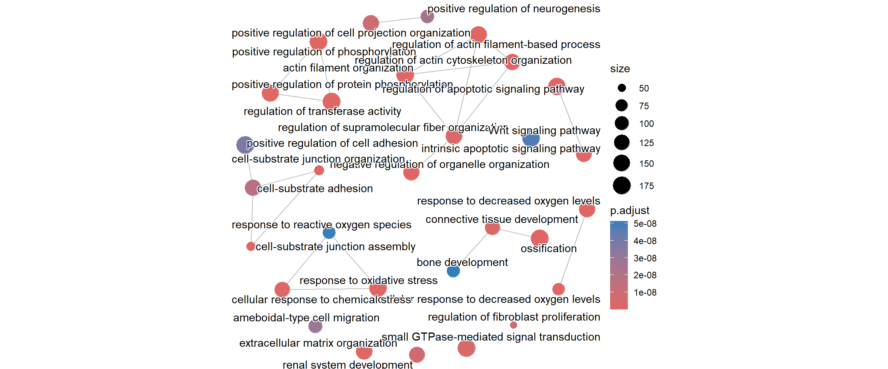
cnetplot(enrich_go_simplified)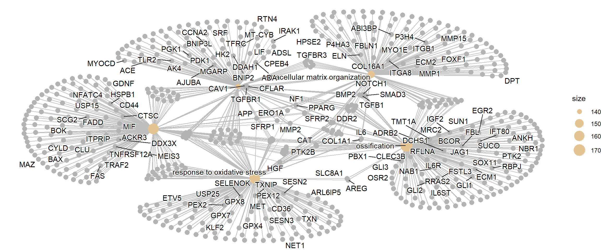
Gene set enrichment analysis (GSEA)
An appealing feature of the GSEA method is that it does not require us to impose arbitrary cut-offs on the dataset to decide what is DE or not. Instead it takes a set of ranked statistics for all genes and looks for sets of genes that occur either at the top or bottom of the list. As GSEA uses the direction of a test result (either up- or down-regulated) the test statistics themselves must have a positive or negative sign. Although the p-values cannot therefore be used for this purpose, they can be transformed using the same equation used in the volcano plot (-10 x log\(_{10}\)) and multiplying by the “sign” of the LFC (i.e. +1 or -1).
The steps in producing the input required for GSEA are i) calculating and retrieving the ranking statistics ii) naming each one according to a chosen identifier (ENSEMBL or ENTREZID for example). The clusterProfiler package also includes an implementation of the GSEA algorithm (via the fgsea package), and the function works in much the same way as enrichGO from above.
ranked_genes <- results_final %>%
mutate(Score = sign(log2FoldChange)*-log10(padj)) %>%
arrange(desc(Score)) %>%
filter(!is.na(Score))
geneList <- pull(ranked_genes, Score)
names(geneList) <- pull(ranked_genes, ENSEMBL)
gse_GO <- gseGO(geneList = geneList,
OrgDb = org.Hs.eg.db,
ont = "BP",keyType = "ENSEMBL")The results may not necessarily be the same as the over-representation analysis, since GSEA is answering a slightly different question.
gse_GO %>% as.data.frame %>%
slice_head(n = 10) %>%
## don't show the core enrichment to make a display a bit cleaner
select(-core_enrichment) ID Description
GO:1990266 GO:1990266 neutrophil migration
GO:0032103 GO:0032103 positive regulation of response to external stimulus
GO:1902622 GO:1902622 regulation of neutrophil migration
GO:0030593 GO:0030593 neutrophil chemotaxis
GO:0006066 GO:0006066 alcohol metabolic process
GO:0010562 GO:0010562 positive regulation of phosphorus metabolic process
GO:0045937 GO:0045937 positive regulation of phosphate metabolic process
GO:0006959 GO:0006959 humoral immune response
GO:0006956 GO:0006956 complement activation
GO:0006809 GO:0006809 nitric oxide biosynthetic process
setSize enrichmentScore NES pvalue p.adjust
GO:1990266 67 -0.8447447 -1.854904 6.769307e-07 0.003719734
GO:0032103 470 -0.6030969 -1.595928 3.442876e-06 0.009459301
GO:1902622 36 -0.8936258 -1.806944 1.011179e-05 0.010266296
GO:0030593 48 -0.8582870 -1.804620 7.208095e-06 0.010266296
GO:0006066 265 -0.6470992 -1.630672 1.140449e-05 0.010266296
GO:0010562 377 -0.6156663 -1.596903 1.307808e-05 0.010266296
GO:0045937 377 -0.6156663 -1.596903 1.307808e-05 0.010266296
GO:0006959 114 -0.7497180 -1.752118 2.433335e-05 0.016713970
GO:0006956 25 -0.9207703 -1.764098 2.858334e-05 0.017451718
GO:0006809 62 -0.8040712 -1.750708 4.250038e-05 0.021230871
qvalue rank leading_edge
GO:1990266 0.003441658 721 tags=21%, list=4%, signal=20%
GO:0032103 0.008752153 1823 tags=20%, list=10%, signal=18%
GO:1902622 0.009498819 721 tags=22%, list=4%, signal=21%
GO:0030593 0.009498819 323 tags=21%, list=2%, signal=21%
GO:0006066 0.009498819 1365 tags=18%, list=8%, signal=17%
GO:0010562 0.009498819 1432 tags=23%, list=8%, signal=21%
GO:0045937 0.009498819 1432 tags=23%, list=8%, signal=21%
GO:0006959 0.015464485 1411 tags=29%, list=8%, signal=27%
GO:0006956 0.016147081 704 tags=56%, list=4%, signal=54%
GO:0006809 0.019643715 655 tags=29%, list=4%, signal=28%As GSEA uses all of the genes that were present in the dataset, it has also used all genes in a pathway to calculate the enrichment. However, to narrow-down the interpretation of a pathways the core enrichment or leading edge of a GSEA can be used. This refers to the subset of genes within an enriched pathway that primarily drives the enrichment signal. It represents the genes that are most responsible for the pathway receiving its high Enrichment Score and thus its significance.
## show the core enrichment for the top pathway
gse_GO %>% as.data.frame %>%
slice_head() %>%
select(core_enrichment) core_enrichment
GO:1990266 ENSG00000115008/ENSG00000002586/ENSG00000125538/ENSG00000145147/ENSG00000115020/ENSG00000169245/ENSG00000115310/ENSG00000131981/ENSG00000163735/ENSG00000124875/ENSG00000112378/ENSG00000111913/ENSG00000197635/ENSG00000115594An overview of the results can be provided by a “ridge plot”. This allows comparison of the test statistics for each of the top enriched pathways.
ridgeplot(gse_GO)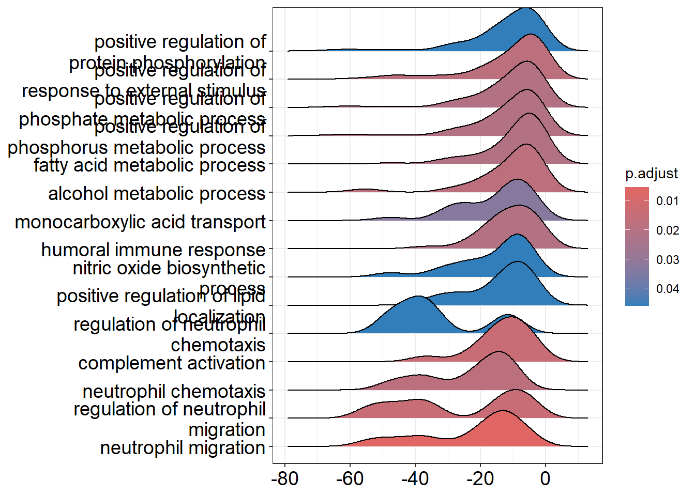
An upset plot can still be produced, but this time the distribution of statistics for overlapping categories can be produced.
enrichplot::upsetplot(gse_GO)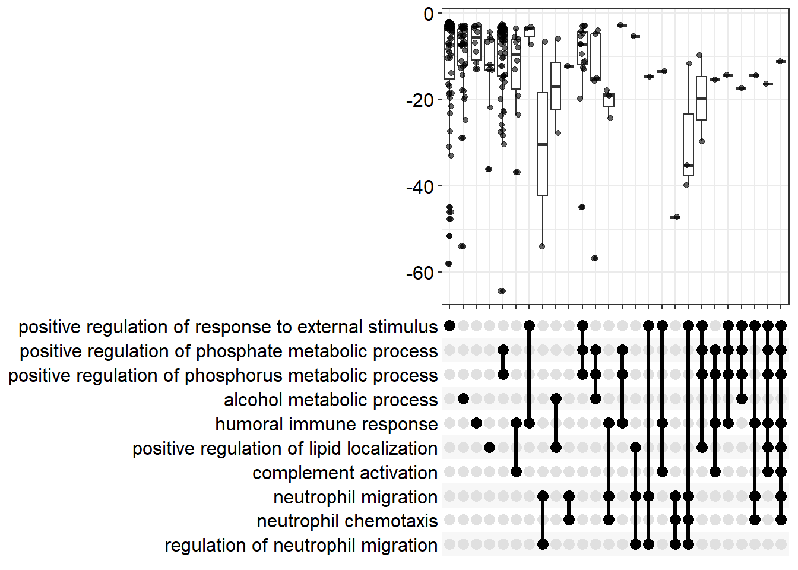
GSEA introduces a new type of plot that summarizes the entire analysis for a single pathway and is central to interpreting its results. Shown below is the GSEA enrichment plot for the pathway with the most extreme enrichment score.
top_gsea <- gse_GO %>% as.data.frame %>%
slice_max(abs(enrichmentScore)) %>%
pull(ID)
top_gsea_ID <- gse_GO %>% as.data.frame %>%
slice_max(abs(enrichmentScore)) %>%
pull(Description)
enrichplot::gseaplot2(gse_GO,geneSetID = top_gsea,title = top_gsea_ID)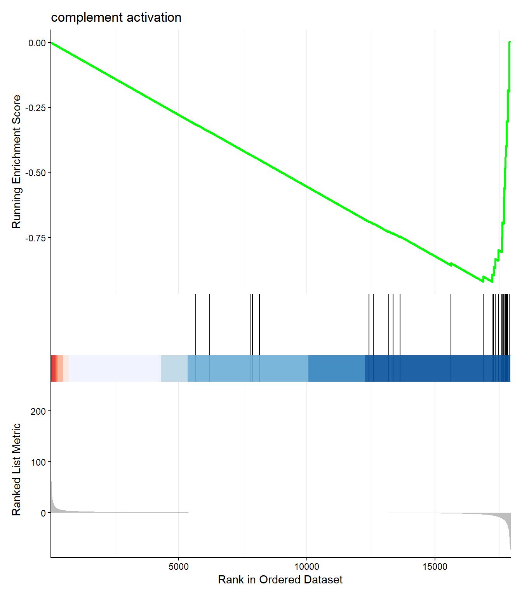
The top panel shows the core evidence for enrichment. The line is a running sum statistic that measures the degree of enrichment. It starts at zero and increases every time a gene belonging to the pathway is encountered in the ranked list, whereas it slightly decreases when a gene not in the pathway is encountered. The peak of this curve is the maximum Enrichment Score (\(\text{ES}\)). If the peak is on the left (positive), the pathway is up-regulated; if the peak is on the right (negative), the pathway is down-regulated. \(\text{GSEA}\)
The black vertical lines beneath the curve are the pathway “barcode”. Each line represents a single gene from the pathway, placed at its exact ranked position. The clustering of these ticks—either on the far left or far right—provides the visual evidence for the calculated \(\text{ES}\).
The Bottom Panel displays the value of the statistic used to rank all genes. This confirms that the genes on the far left of the plot have the most positive values (high \(\text{LFC}\)) and those on the far right have the most negative values (low \(\text{LFC}\)), providing context for the directional enrichment observed in the top panel.
In the example plot there is a high concentration of vertical black lines to the right of the plot - coinciding with the lowest point of the green line. This is where the majority of genes for this pathway can be found in the ranked gene list, and therefore we conclude there is a tendency for genes in this pathway to be DE.
Exercise
- In addition to enriched GO terms,
clusterProfilercan also find enriched KEGG terms using theenrichKEGGfunction. There are a couple of changes that are required fromenrichGOENTREZIDhas to be used as the identifer type- the user must input an appropriate organism code. The code for humans is
hsa.
- Use the
enrichKEGGfunction to identify enriched KEGG terms in the analysis. - (Optional) If you have time, use the
gseKEGGto perform GSEA using KEGG terms.
Solution
## KEGG tools require ENTREZ ID
sigGenesEntrez <- results_final %>%
filter(padj < 0.05) %>% pull(ENTREZID)
enrich_kegg <- enrichKEGG(gene = sigGenesEntrez,
organism = "hsa",)
as.data.frame(enrich_kegg) %>% slice_head(n = 10) category subcategory
hsa04820 Cellular Processes Cell motility
hsa05205 Human Diseases Cancer: overview
hsa04510 Cellular Processes Cellular community - eukaryotes
hsa04151 Environmental Information Processing Signal transduction
hsa04933 Human Diseases Endocrine and metabolic disease
hsa05418 Human Diseases Cardiovascular disease
hsa05010 Human Diseases Neurodegenerative disease
hsa01521 Human Diseases Drug resistance: antineoplastic
hsa05417 Human Diseases Cardiovascular disease
hsa05208 Human Diseases Cancer: overview
ID Description
hsa04820 hsa04820 Cytoskeleton in muscle cells
hsa05205 hsa05205 Proteoglycans in cancer
hsa04510 hsa04510 Focal adhesion
hsa04151 hsa04151 PI3K-Akt signaling pathway
hsa04933 hsa04933 AGE-RAGE signaling pathway in diabetic complications
hsa05418 hsa05418 Fluid shear stress and atherosclerosis
hsa05010 hsa05010 Alzheimer disease
hsa01521 hsa01521 EGFR tyrosine kinase inhibitor resistance
hsa05417 hsa05417 Lipid and atherosclerosis
hsa05208 hsa05208 Chemical carcinogenesis - reactive oxygen species
GeneRatio BgRatio RichFactor FoldEnrichment zScore pvalue
hsa04820 104/2184 233/9497 0.4463519 1.940936 7.946716 1.285288e-13
hsa05205 90/2184 204/9497 0.4411765 1.918431 7.246569 1.296939e-11
hsa04510 89/2184 203/9497 0.4384236 1.906460 7.134185 2.554654e-11
hsa04151 133/2184 362/9497 0.3674033 1.597632 6.335532 1.252586e-09
hsa04933 51/2184 101/9497 0.5049505 2.195749 6.602037 1.306066e-09
hsa05418 63/2184 142/9497 0.4436620 1.929239 6.096752 1.193027e-08
hsa05010 138/2184 391/9497 0.3529412 1.534745 5.900922 1.228918e-08
hsa01521 41/2184 80/9497 0.5125000 2.228577 6.030315 3.130383e-08
hsa05417 85/2184 216/9497 0.3935185 1.711193 5.777844 3.891880e-08
hsa05208 88/2184 227/9497 0.3876652 1.685740 5.714543 5.096923e-08
p.adjust qvalue
hsa04820 4.472802e-11 2.529988e-11
hsa05205 2.256673e-09 1.276461e-09
hsa04510 2.963398e-09 1.676211e-09
hsa04151 9.090218e-08 5.141775e-08
hsa04933 9.090218e-08 5.141775e-08
hsa05418 6.109477e-07 3.455754e-07
hsa05010 6.109477e-07 3.455754e-07
hsa01521 1.361717e-06 7.702390e-07
hsa05417 1.504860e-06 8.512065e-07
hsa05208 1.773729e-06 1.003289e-06
geneID
hsa04820 2006/1301/2335/1282/7058/8516/22801/1311/1289/1277/1284/633/7168/1462/22795/1634/1288/2200/1293/2273/2201/23500/84675/1832/7111/84665/91010/3655/3693/483/50509/1756/3673/3696/8572/1290/6382/1466/284217/84823/1837/829/1287/255631/4627/1278/83660/476/23353/9260/7414/3676/272/85301/8910/25802/58529/6443/6645/2192/56776/51332/4001/114793/1281/830/2275/6385/23345/171024/7057/4608/7791/2199/70/7170/2010/3678/3339/3679/6383/6709/375790/1286/7094/1302/2023/3690/64236/6444/51778/2027/5339/7169/29766/3688/1729/64423/25777/3691/7138/71/4000/4628
hsa05205 2335/4313/3082/1277/7482/4660/1634/8325/7078/960/7099/27250/3693/3481/2535/117581/286/7422/3673/857/5781/6382/7472/817/967/5335/5328/3479/355/1278/3480/9475/4233/8503/22800/6608/6548/2247/51384/7023/5293/2316/5747/7040/10855/6385/6093/5290/7157/23365/3265/7057/6300/60495/7474/1514/6774/208/3678/2817/3339/6383/6198/5329/7074/3091/84309/4193/9138/4609/673/1655/1026/3690/5291/8826/5829/5962/858/5499/3688/6654/207/5605/6714/7097/6655/1432/8324/71
hsa04510 2335/1282/7058/8516/22801/1311/3082/80310/3910/1277/1284/4660/3909/1288/3912/1293/5156/4638/3655/3693/5154/2317/7422/3673/3696/2321/7148/857/284217/56034/1287/3479/1278/3480/9475/83660/824/5159/7414/4233/3676/8503/3918/5293/2316/5747/2534/7423/399694/103910/6093/5290/3265/7057/7791/3725/10627/208/3678/9564/3679/5062/596/7408/673/1286/7094/3914/81/3690/5291/1950/5829/858/5499/572/3688/1729/5601/394/6654/207/331/6714/5906/3691/6655/2012/71
hsa04151 2335/1282/7058/8516/2252/22801/1311/3082/80310/2069/3910/1277/1284/1129/54541/3909/1288/3912/23566/1293/1902/5525/7099/9180/374/5106/5156/5519/1978/4254/3655/3569/3693/10971/3481/54331/4915/5154/3575/7422/2255/3673/3696/2321/7148/627/284217/6446/2791/468/56034/28227/1287/3479/7010/1278/3480/1019/3454/5159/23678/4233/3676/8503/3918/5563/2247/3815/2784/64764/90993/5293/5747/2790/5562/2668/7423/5585/3716/1969/1147/5290/7534/7157/5528/3265/55970/7057/1435/3570/1977/208/3678/7533/7184/3679/6198/64223/4193/596/7249/4609/2783/10161/3320/9586/1026/1286/3914/6794/5970/3667/3690/5291/7531/1950/29941/57521/572/3688/2690/6654/207/5934/5605/1440/2149/3691/7097/5527/5586/6655/3717
hsa04933 2335/1282/4313/2152/1277/1284/7412/4088/1288/3569/50507/7422/3553/5335/1287/1278/1019/185/8503/3552/3383/5293/1281/7040/7423/5290/3265/6300/3725/23236/6774/208/5054/596/7048/1286/113026/5970/581/5291/6347/5332/7046/1729/5601/207/5331/1432/3717/5330/3576
hsa05418 4313/3554/4257/7412/4217/5154/652/1728/7422/3553/7295/10365/857/6382/4205/2947/4258/5327/8503/8878/3552/3383/9181/5563/9446/5293/4780/5747/5562/6385/1147/5290/7157/51588/6300/3162/3725/1514/208/2817/7184/6383/596/3320/4259/5970/1843/3690/5291/2941/7341/6347/858/2946/801/5601/207/6885/2949/6714/9817/1432/71
hsa05010 5743/7482/8325/4217/64116/102/6622/57142/3569/4311/2535/50507/83464/4891/3553/25825/1649/203068/7472/468/355/55062/10376/10381/824/8503/3552/22926/8660/4538/4540/51384/5293/1855/3028/1856/1857/10476/23621/4726/8408/56901/7417/1147/5290/4537/348/6391/4541/7381/64837/3265/22943/11047/1435/4729/4137/4713/4035/4707/637/23385/9451/7846/7474/23236/4539/10383/6392/208/4694/5289/9821/1452/7416/100506742/7384/8772/10105/4519/91252/673/5709/55334/488/1350/5970/3667/374291/89953/8883/4728/351/5291/5715/4709/8313/84617/522/4535/7979/292/2776/5332/7186/801/1020/572/293/3798/513/5601/5702/207/4512/5331/775/4513/514/3416/5605/498/5710/4514/4723/1965/5530/8324/5718/5330/515/3799/25800/4536/5714/29985/1351/5704
hsa01521 3082/80310/3084/5156/1978/3569/5154/7422/56034/5335/3479/3480/2621/5159/4233/8503/558/2247/5293/3716/399694/5290/3265/3570/6774/1977/208/6198/596/673/581/5291/1950/572/4763/6654/207/5605/6714/6655/3717
hsa05417 7412/948/4312/5468/4217/7099/3569/4067/3654/7436/3553/1649/2919/4314/30001/468/817/5335/355/9475/8503/3383/3606/22926/142678/3306/5452/3309/5293/4780/5747/8743/4775/10010/1147/5290/7157/3265/6300/8795/29110/637/3725/9451/23236/6774/208/3308/7184/10454/3949/596/148022/9138/6257/3320/834/5970/929/581/23643/5291/6347/3665/29108/5332/7186/801/572/5601/207/5331/6885/51135/6714/5906/7097/1965/5530/1432/3717/5330/958/3576/3592
hsa05208 3082/4257/4217/1646/1545/1645/50507/1728/7422/5781/2947/4258/5337/8644/4233/8503/847/4538/4540/9446/5293/4780/5747/10476/4726/56901/7417/1147/5290/4537/6391/4541/7381/2052/3265/4729/6300/3162/4713/4707/3725/4539/6392/208/4694/3091/7416/7384/5770/10105/4519/673/1350/4259/5970/374291/4728/5291/2941/1950/4709/522/4535/292/25/2946/572/293/513/5601/6654/207/4512/4513/514/5605/2949/6647/6714/498/4514/4723/9817/6655/1432/515/4536/1351
Count
hsa04820 104
hsa05205 90
hsa04510 89
hsa04151 133
hsa04933 51
hsa05418 63
hsa05010 138
hsa01521 41
hsa05417 85
hsa05208 88ranked_genes <- results_final %>%
mutate(Score = sign(log2FoldChange)*-log10(padj)) %>%
arrange(desc(Score)) %>%
filter(!is.na(Score)) %>%
filter(!is.na(ENTREZID)) %>%
filter(!duplicated(ENTREZID))
geneList <- pull(ranked_genes, Score)
names(geneList) <- pull(ranked_genes, ENTREZID)
gse_GO <- gseKEGG(geneList = geneList,
organism = "hsa")
gse_GO %>% data.frame() %>% slice_head(n = 10) ID Description
hsa04610 hsa04610 Complement and coagulation cascades
hsa04142 hsa04142 Lysosome
hsa04061 hsa04061 Viral protein interaction with cytokine and cytokine receptor
hsa00140 hsa00140 Steroid hormone biosynthesis
hsa00590 hsa00590 Arachidonic acid metabolism
hsa04820 hsa04820 Cytoskeleton in muscle cells
hsa05204 hsa05204 Chemical carcinogenesis - DNA adducts
hsa04640 hsa04640 Hematopoietic cell lineage
setSize enrichmentScore NES pvalue p.adjust
hsa04610 42 -0.8847450 -1.863660 1.231655e-06 0.0004249211
hsa04142 122 -0.7193317 -1.728881 5.642238e-05 0.0097328598
hsa04061 45 -0.8092317 -1.733303 3.298341e-04 0.0250365638
hsa00140 22 -0.8920840 -1.708880 2.177490e-04 0.0250365638
hsa00590 31 -0.8461613 -1.701086 3.628488e-04 0.0250365638
hsa04820 169 0.6681234 1.798939 5.897550e-04 0.0339109115
hsa05204 29 -0.8392856 -1.664224 7.370988e-04 0.0363284415
hsa04640 45 -0.7855749 -1.682633 1.111485e-03 0.0479327919
qvalue rank leading_edge
hsa04610 0.0003746825 1081 tags=48%, list=7%, signal=44%
hsa04142 0.0085821403 1373 tags=25%, list=9%, signal=23%
hsa04061 0.0220764819 1348 tags=56%, list=9%, signal=51%
hsa00140 0.0220764819 662 tags=41%, list=4%, signal=39%
hsa00590 0.0220764819 662 tags=29%, list=4%, signal=28%
hsa04820 0.0299016123 406 tags=20%, list=3%, signal=20%
hsa05204 0.0320333168 814 tags=45%, list=5%, signal=42%
hsa04640 0.0422656807 809 tags=38%, list=5%, signal=36%
core_enrichment
hsa04610 5270/716/10544/2159/5327/3075/710/5328/5627/1604/966/2/718/5648/1191/624/5055/7035/4179/2152
hsa04142 1213/1514/164/6609/3920/8763/135112/285362/138050/1200/8905/2760/1203/968/1513/967/9583/1508/950/2799/175/4891/2519/9741/2517/9516/3074/26503/3988/3423/1075
hsa04061 6347/3588/6387/57007/11009/9547/8795/8740/6357/3570/1435/10344/7133/8743/8794/3606/6354/2919/6355/3569/3627/3572/6374/6372/51554
hsa00140 8644/6715/3290/3294/1645/1545/1646/412/9420
hsa00590 8644/284273/22949/5742/6916/5740/9536/5321/5743
hsa04820 2006/1301/2335/1282/7058/22801/1311/1289/1277/1284/633/7168/1462/2200/1293/2201/23500/1832/91010/3693/50509/1756/8572/1290/6382/1466/284217/84823/255631/4627/1278/83660/9260/85301
hsa05204 2946/2941/4259/9/2052/9446/4258/2947/3290/1545/1646/4257/5743
hsa04640 3815/3552/3676/1604/100133941/3673/966/3553/4311/7037/3569/3655/4254/960/928/948/3554Which database to use?
We have looked the two main types of test supported by clusterProfiler using a database of Gene Ontology (GO) terms as a reference. These were implemented in the enrichGO and gseGO functions respectively. The above exercise used KEGG instead. A nice feature of clusterProfiler is that you can test different databases for significant pathways with few changes to your code. Some of the different databases and the corresponding function to use are summarised below
| Database | Function | Primary Focus | Pros | Cons |
|---|---|---|---|---|
| Gene Ontology (GO) |
|
Biological Process (BP), Molecular Function (MF), Cellular Component (CC) |
|
|
| KEGG (Kyoto Encyclopedia of Genes and Genomes) |
|
Metabolic & Regulatory Pathways |
|
|
| Reactome |
|
Molecular Events & Reactions |
|
|
| WikiPathways |
|
Community-Driven, Open Content |
|
|
| Disease Ontology |
|
Structured Vocabulary for Human Diseases |
|
|
Ultimately, you will have to decide which database(s) are more appropriate for the interpretation of your results.
Additional visualistion of KEGG pathways
The special feature of a KEGG pathway is its standardized, structured graphical representation as a set of computable maps. This means that visualisation with tools like pathview is possible. In the below we take a pathway such as “Lysosome”, use it’s standard KEGG layout and colour the genes involved in the pathway according to the LFC.
library(pathview)
# The KEGG ID you want to visualize
kegg_id <- "hsa04142"
# Organism code (hsa for human)
organism_code <- "hsa"
lfc_values <- pull(results_final, "log2FoldChange")
names(lfc_values) <- pull(results_final, "ENTREZID")
pathview(
gene.data = lfc_values,
pathway.id = "hsa04142",
species = "hsa",
low = "blue",
mid = "gray",
high = "red",
kegg.native = TRUE,
out.suffix = "lysosome_blue_red"
)
Summary
We have covered many aspects of how to explore your RNA-seq results. You may wish to you as many, or as few of these, as possible to understand your data. Unfortunately, as a Bioinformatician I cannot tell you exactly which cut-offs and combination of databases are the most applicable for your data. The key takeaway is that success hinges on the initial phases of Quality Control (QC) and data normalization, which ensure the integrity of the downstream differential expression results. By combining the statistical findings with our prior biological knowledge, we transform a list of numbers into a clear understanding of the altered pathways and functions, making the data truly interpretable and actionable.
Important
Ultimately, the data tells a story, but you, as the researcher, must use your knowledge and judgment to determine the best lens through which to view it.